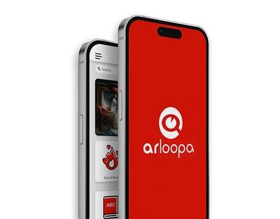
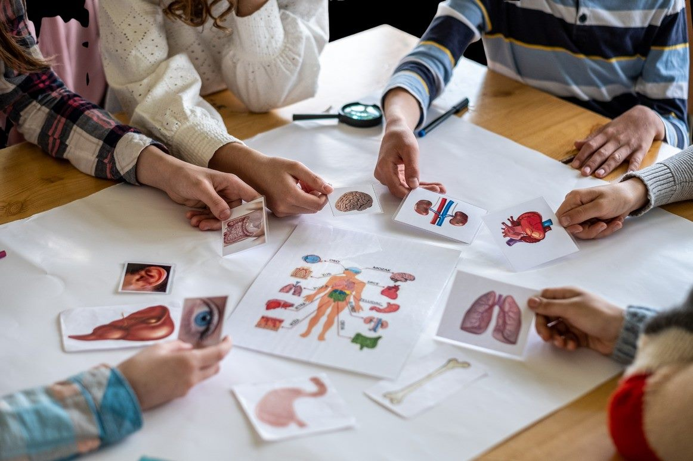
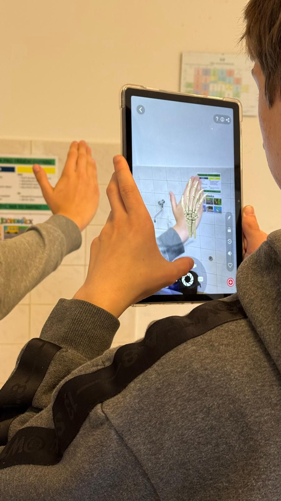

Rozšírená realita (AR)
Digitálnaanatómia
Vďaka rozšírenej realite uvidíte srdce, pľúca či mozog priamo pred sebou v priestore triedy.

Preskúmajte ľudské telo
Pozrite sa dovnútra ľudského tela!

Anatómia v AR
Vizualizácia orgánových sústav pomocou interaktívnych 3D modelov.

Moderná biológia
Pochopenie funkcií orgánov inak než len z učebnice.

Priestorové vnímanie
Rozvoj predstavivosti cez interakciu s virtuálnymi objektmi.
Ľudské telo a anatómia
Čo sa žiaci naučia
- Detailná vizualizácia vnútorných orgánov a ich funkcií v rozšírenej realite
- Interaktívne porovnanie digitálnych 3D modelov s reálnym ľudským telom
- Prepojenie biológie a moderných technológií pre lepšie zapamätanie učiva
- Vzdelávací okruh
- Ľudské telo a anatómia
- Cieľ
- Porozumenie stavbe a fungovaniu ľudského tela pomocou AR technológií.
- Očakávaný výstup
- Žiak rozpozná orgánové sústavy a vysvetlí ich základné funkcie.
- Rozvíjané kompetencie
- Prírodovedná gramotnosť, digitálne kompetencie, schopnosť interpretovať odborné informácie.
- Cieľová skupina
- 5.–8. ročník ZŠ
Metodika a pracovné listy k tejto aktivite
Podrobný priebeh výučby, pracovné listy a materiály na stiahnutie nájdete v e-learningu pre učiteľov.